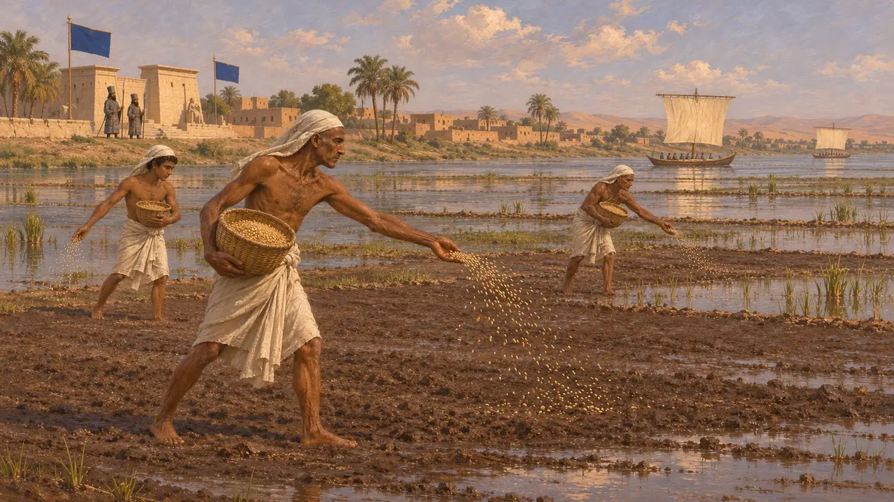
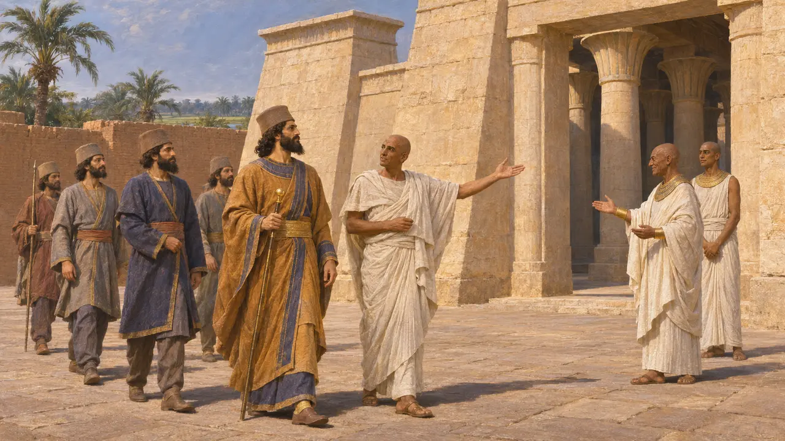
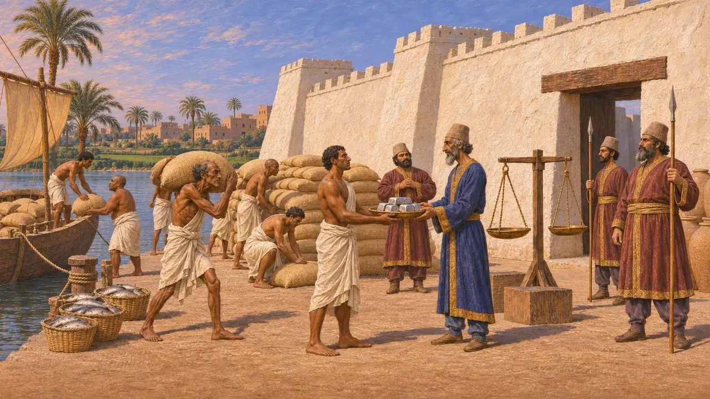
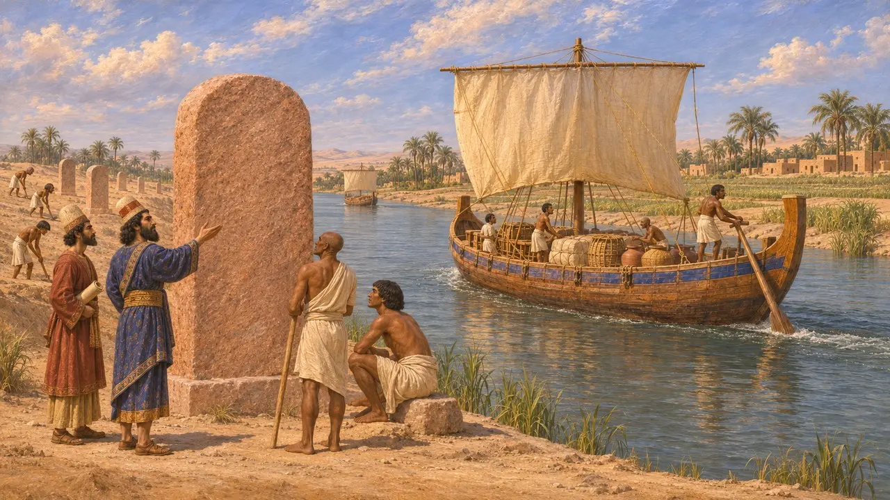
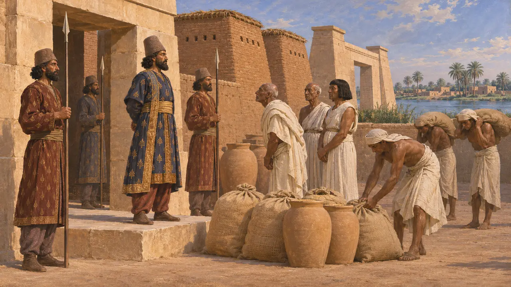

Egitto
Il regno del Nilo, conquistato da Cambise nel 525 a.C. e governato come satrapia di Mudraya
Nel gioco: Livello 2: Il Portalancia, Livello 3: La Menzogna, Livello 5: La Carta, Livello 9: Il canale
L'Egitto era la lunga valle e il delta del Nilo, uno dei regni più antichi e ricchi governati dai Persiani. Cambise lo conquistò nel 525 a.C. e prese i titoli del faraone. Come satrapia di Mudraya pagava tributo in argento e grano, mandava navi e uomini, e si ribellò al Re nel 522 a.C. e di nuovo nel 486 a.C.
Nel gioco: Il livello Il Portalancia è ambientato in Egitto, a Menfi, nel 525-524 a.C. Le sue case, le palme, la fauna e il clima sono egizi, e l'Egitto porta la sua bandiera fra le nazioni e sullo stendardo di battaglia.

Il dono del fiume
Racconto anticoErodoto dice che la parte d'Egitto in cui navigavano i Greci era terra fatta dal Nilo, «il dono del fiume». Descrive come la piena di ogni estate coprisse i campi, così che il grano si poteva seminare arando appena. La salita e la discesa del Nilo regolavano l'anno agricolo dell'Egitto.
Herodotus 2.5, 2.14

La conquista e i titoli del faraone
Nelle fontiCambise sconfisse Psammetico III a Pelusio e prese Menfi nel 525 a.C. La statua di Udjahorresnet, un funzionario egizio, registra che Cambise prese i titoli di un faraone e un nome di trono, e gli fu mostrato il tempio di Neith a Sais. I documenti egizi datano secondo i suoi anni di regno.
Herodotus 3.10-15; naophorous statue of Udjahorresnet, Vatican Museums


Dario e il canale
Nelle fontiDario fece erigere stele lungo un canale dal Nilo al Mar Rosso, in antico persiano, elamita, babilonese ed egizio. Il testo antico persiano dice che ordinò di scavarlo dal Nilo fino al mare che va dalla Persia, e che le navi lo percorsero fino in Persia.
DZc; the Chalouf and Kabret stelae

Fonti
- Herodotus 2.5-14
- DB §21
- Herodotus 3.10-15
- Herodotus 3.91
- Herodotus 7.1-7
- Naophorous statue of Udjahorresnet, Vatican Museums
- DZc
- P. Briant, From Cyrus to Alexander, 2002